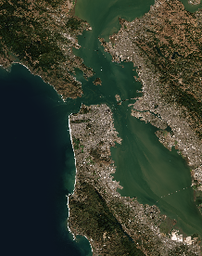

🚀 User Guide#
localtileserver can be used in a few different ways:
In a Jupyter notebook with ipyleaflet or folium
From the commandline in a web browser
With remote Cloud Optimized GeoTiffs
With STAC catalogs, xarray DataArrays, and virtual mosaics
Here is the “one-liner” to visualize a large geospatial image with
ipyleaflet in Jupyter:
import localtileserver as lts
from localtileserver import examples
# client = lts.open('path/to/geo.tif')
client = examples.get_san_francisco() # use example data
client
The localtileserver.TileClient class utilizes the _ipython_display_
method to automatically display the tiles with ipyleaflet in a Notebook.
You can also get a single tile by:
# z, x, y
client.tile(10, 163, 395)
And get a thumbnail preview by:
client.thumbnail()

🍃 ipyleaflet Tile Layers#
The TileClient class is a nifty tool to launch a tile server as a background
thread to serve image tiles from any raster file on your local file system.
Additionally, it can be used in conjunction with the get_leaflet_tile_layer()
utility to create an ipyleaflet.TileLayer for interactive visualization in
a Jupyter notebook. Here is an example:
import localtileserver as lts
from localtileserver import examples
from ipyleaflet import Map
# First, create a tile server from local raster file
# client = lts.open('path/to/geo.tif')
client = examples.get_elevation() # use example data
# Create ipyleaflet tile layer from that server
t = lts.get_leaflet_tile_layer(client,
indexes=1, vmin=-5000, vmax=5000,
opacity=0.65)
# Create ipyleaflet map, add tile layer, and display
m = Map(zoom=3)
m.add(t)
m
🌳 folium Tile Layers#
Similarly to the support provided for ipyleaflet, I have included a utility
to generate a folium.TileLayer (see reference)
with get_folium_tile_layer(). Here is an example with almost the exact same
code as the ipyleaflet example, just note that folium.Map is imported from
folium and we use add_child() instead of add():
import localtileserver as lts
from localtileserver import examples
from folium import Map
# First, create a tile server from local raster file
# client = lts.open('path/to/geo.tif')
client = examples.get_oam2() # use example data
# Create folium tile layer from that server
t = lts.get_folium_tile_layer(client)
m = Map(location=client.center(), zoom_start=16)
m.add_child(t)
m
🗒️ Usage Notes#
get_leaflet_tile_layer()accepts either an existingTileClientor a path from which to create aTileClientunder the hood.If matplotlib is installed, any matplotlib colormap name can be used as a palette choice
Band math expressions, stretch modes, and multiple output formats are supported across all tile endpoints
The server runs on FastAPI and provides interactive API docs at
/swagger/Tiles work in JupyterLab, Hub, Binder, and Notebook 7 out of the box. In VS Code Jupyter (incl. Remote-SSH), Google Colab, Shiny, Solara, and marimo, tiles are routed through a kernel comm channel via jupyter-loopback (details).
💭 Feedback#
Please share your thoughts and questions on the Discussions board. If you would like to report any bugs or make feature requests, please open an issue.
If filing a bug report, please share a scooby Report:
import localtileserver as lts
print(lts.Report())